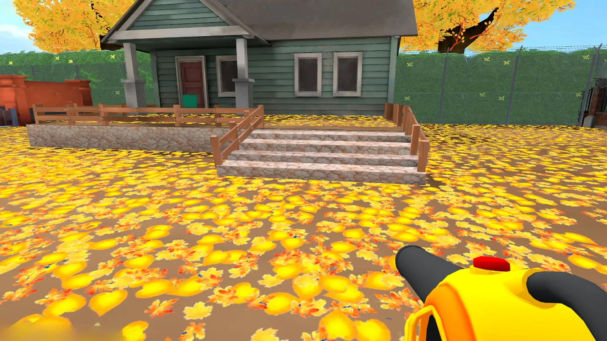
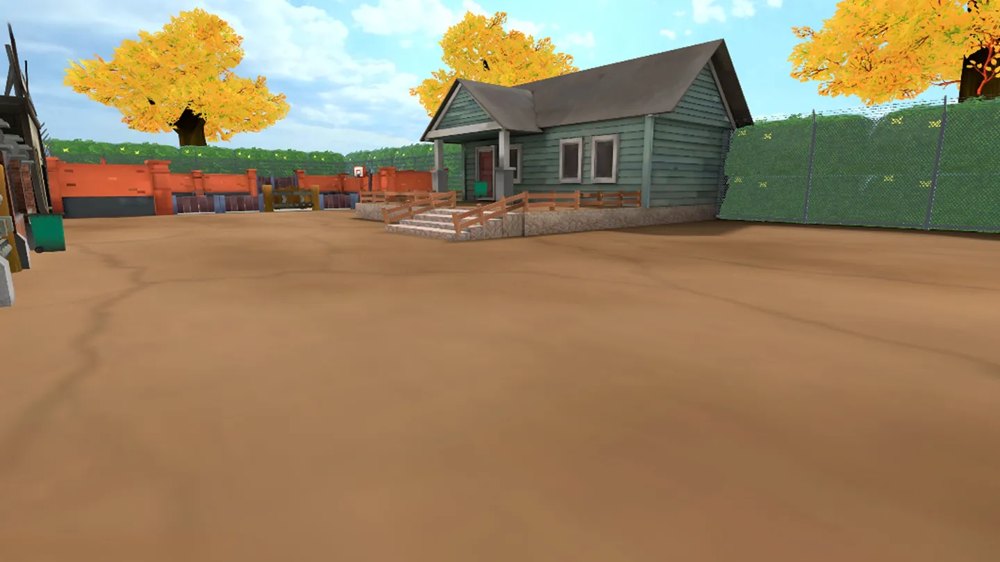
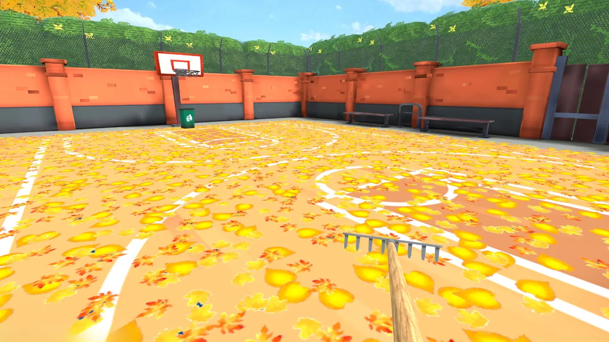
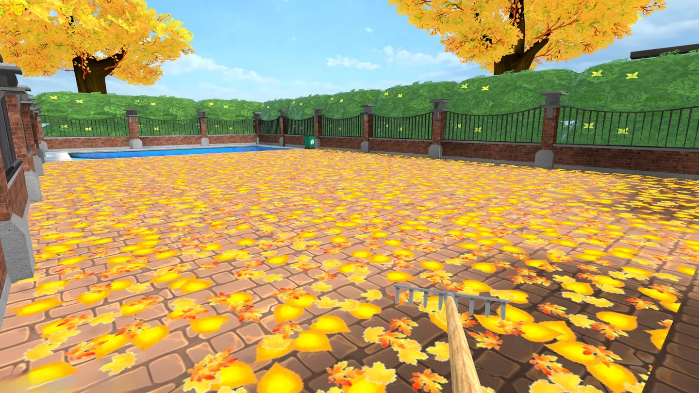

The idea
Autumn has buried a garden in leaves, and clearing it is the whole game. You gather leaves into a trash bag you physically carry, empty each full bag into the bin, and take an area from chaos to spotless. No timers, no fail state — the satisfaction has to come entirely from how the cleaning itself feels, which puts all the design weight on the interaction model.
It's also the first thing I've taken end to end on my own: concept, systems, art integration, build configuration, and a post-launch patch driven by the shipped build.
What I built
Everything. There was no team, no publisher, and no existing codebase to start from — the scope below is the whole project.
- Design. The core loop, the five-area progression, the coin economy and shop, and the decision that each tool had to be a distinct interaction model rather than a stat upgrade — which is what made the game worth building and also the most expensive constraint to hold.
- VR interaction systems. Direct hand grabbing, the rake's physical pile that survives being dragged across a garden, the blower's wide-cone sweep, and the carried bag that all three tools feed into.
- Progression and persistence. Area unlocks, completion tracking, the shop, and a save system carrying coins, tool ownership, unlocks and tutorial state between sessions.
- Performance work for the Quest frame budget. The active-area model, preview rendering for inactive areas, and proximity culling of leaf interaction — the systems that let ~12,400 collectible objects exist without the physics cost scaling with them.
- Platform and engine integration. A custom OpenXR feature for display refresh rate, world-space UI in UI Toolkit, and a Quest-specific URP pipeline with Single Pass Instanced stereo.
- Build configuration and release. IL2CPP / ARM64, Android SDK targets, manifest auditing, store submission, storefront assets and release notes.
- Post-launch support. Playing the shipped build, acting on what it surfaced, and keeping the game updated after release.
How it plays
Five areas — the Barn, Courtyard, Playground, Pool and Lawn — each fully covered. Clearing one unlocks the next and pays out coins, and coins buy better tools from a shop between runs. A save system carries coins, tools owned, area unlocks and tutorial state across sessions.
The three tools are genuinely different interaction models rather than reskins of one another — that was the design constraint I set, because a cleaning game whose upgrades only change a number isn't worth building:
- Hands. Reach out and grab leaves directly. Short range, always available, no upgrade required.
- Rake. Leaves gather and stay physically piled on the rake head. You drag the pile across the garden and tip it into the bag — and it's the only tool that works with the bag set down on the ground rather than carried.
- Leaf blower. A wide cone with long reach that sweeps leaves straight into a bag you're carrying.




Built for comfort
Cozy games get played in long sessions, so discomfort is a design bug rather than a polish item. Device builds use physical head turning only — no snap turn and no continuous turn, the two most common causes of motion discomfort in VR.
Locomotion speed is a player setting that can be changed mid-session from the pause menu, not buried in a main menu you'd have to quit an area to reach. If the movement doesn't feel right, you fix it where you are.
Under the hood
-
A custom OpenXR feature for display refresh rate.
Quest boots its panel at 72 Hz and stays there unless an app asks for more.
I implemented the
XR_FB_display_refresh_rateextension as a custom OpenXR feature: it queries what the runtime actually supports, requests the best available rate up to 90 Hz, then matches the render target frame rate to it. Nothing is hardcoded — if the extension is missing, it degrades cleanly. - World-space UI built entirely in UI Toolkit. I built the interface in UXML and USS rather than the usual world-space Canvas approach. The gameplay HUD rides on the left controller as a wrist display and hides itself the moment that hand grabs something, so the panel never fights the object you're holding.
- ~12,400 individually collectible leaves. Authored across the five areas — from 356 in the tutorial Barn up to 6,044 in the Lawn. Only the active area's leaves are live; the rest render as lightweight previews so the garden still looks populated. I cull leaf interaction by proximity to the player on a refresh tick, which keeps physics queries bounded no matter how large the area is, and render through a Quest-specific URP pipeline asset with Single Pass Instanced stereo.
After launch
The game is still actively supported. Version 1.1 followed release with balance and gameplay changes driven by the live build, and further updates are ongoing.